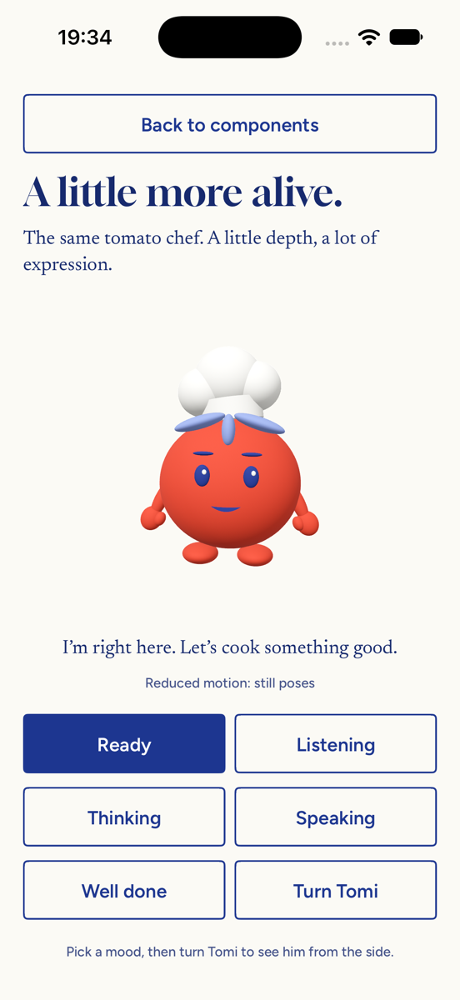
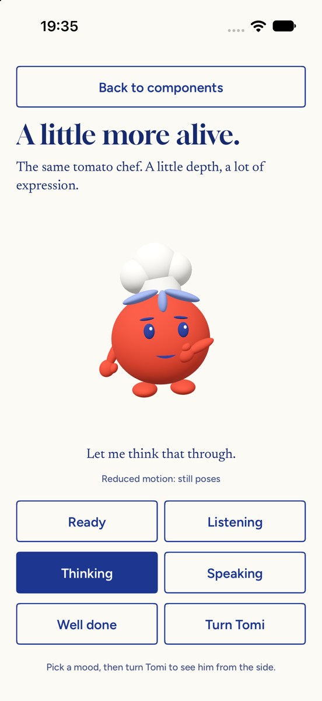
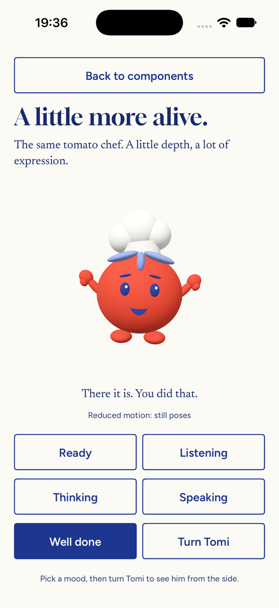

Your words on 5 October: “make him 3D animated, kind of like a game character… kinda like Miss Minutes from Loki.” It went straight to code with no design round. Here is what shipped, three directions, and a place to choose.
What shipped (#94)
A RealityKit figure built in code from rounded shapes, with five states. Captured from the running app, Reduce Motion on.

Idle

Thinking

Celebrating
The gap. The character you pointed at is a hand-drawn cartoon: a face that takes over the body, rubber limbs, squash and stretch, snappy timing, a bit of a performer. What shipped is a toy made of spheres: small face, stiff limbs, smooth but even motion. Simple shapes make it hard to get big expressions; that limit comes from how it was built, not from the tuning.
Three directions
Each one drawn the same way: idle, thinking, celebrating. The figures move; untick below to compare still poses.
A
Broadcast cartoon
Closest to what you asked for
Flat 2D, thick ink line, a face that fills the body, rubber-hose arms with gloves, squash and stretch. A host on a screen, not a toy. It takes the qualities of that reference, not its look: Tomi stays a tomato chef.
Feels
Big, readable emotion even small on screen
Funny, alive, has timing
Fits a talking companion
How it is built
Rive: a vector rig with a state machine, designed in the Rive editor, played by its iOS runtime
States map one to one to idle, listening, thinking, explaining, celebrating
Costs
Rive is a third-party package: needs your approval, like FluidAudio
Someone has to draw and rig it in Rive (an illustrator, or us with time)
Replaces the RealityKit code from #94
B
Soft toy 3D
Keeps 3D
A sculpted, shaded vinyl toy: big glossy eyes, soft light, weighty, slower motion. What #94 was aiming for, but modelled by hand instead of built from spheres.
Feels
Premium, tactile, "game character"
Calm, cosy; fewer laughs
Expressions subtler
How it is built
Modelled and rigged in Blender, exported as USDZ with animation clips
Played by RealityKit, behind the same TomiCompanion interface
Costs
Needs a 3D artist; the hardest of the three to get right
A model file in the app (AGENTS.md says Tomi is drawn in code: a rule change)
Most GPU and battery
C
Printed mascot, alive
Most on-brand
The approved round 3 mascot itself, animated like a printed stamp: same cobalt line and flat colour, small hops "on twos", eyes and brows doing the acting. Belongs to the Tasting menu page instead of floating above it.
Feels
Charming, restrained, part of the menu
Least like a game character
How it is built
SwiftUI shapes, extending the mascot the app already draws
No dependency, no rule change
Costs
Less range: it will not do big performance
Further from your original ask
Side by side
A Broadcast cartoon
B Soft toy 3D
C Printed, alive
Shipped (#94)
Expression range
Largest
Medium
Small to medium
Small
Matches "Miss Minutes"
Yes, in spirit
Partly (character, not style)
No
No
Fits Tasting menu look
With care (ink and palette from tokens)
Least
Exactly
Partly
New dependency or rule change
Rive (approval)
Model files in app (rule change)
None
None
Who makes it
Illustrator or animator in Rive
3D artist in Blender
Us, in code
Done
Phone cost while visible
Low
Highest
Lowest
High
Decision
18 October 2026: direction A, Broadcast cartoon (#137). The owner chose A and asked for it everywhere Tomi is drawn: the animated companion and the printed mascot. It is built in SwiftUI code from shared parts (body, face, eyes, brows, mouth, toque, leaf, arms, gloves, legs) instead of Rive, so it needs no new dependency and no image or model files. The RealityKit companion of #94 is removed. Listening (leaning in, a glove cupped by the face) and explaining (open hands, mouth shapes cycling) are drawn in the same style. The handoff is docs/design/companion.md.